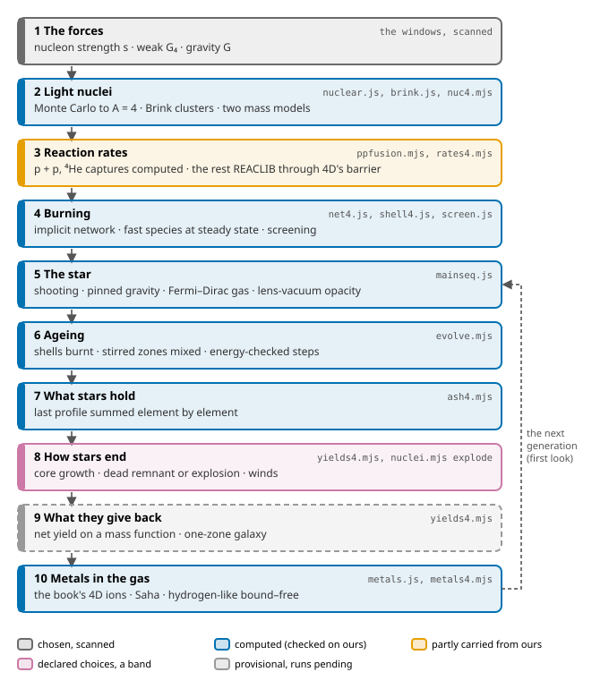

How the stars are modelled
Paper 2 builds four-dimensional stars from the bottom up: from a choice of forces, through the nuclei those forces bind and the reactions between them, to stars that burn and age, what those stars make, and what they give back to the gas the next stars form from. Every link is a calculation written for any number of dimensions and run first on our own world, where the answer is known, before it is run in four. This page walks the chain one link at a time: what each link computes, how, what it is checked against, where its code lives, and what it leaves out.

1 The forces
Three forces are not given by four dimensions and have to be chosen. The nucleon force is taken as one of two standard shapes from our world, Minnesota’s and Malfliet–Tjon’s, with its attraction multiplied by a strength ; the weak force is Fermi’s contact theory in 4 + 1 dimensions (Fermi 1934) with its own coupling ; gravity is pinned at like the charge law, with strength in multiples of ours. None is fitted to a wanted outcome. Each is scanned, and the paper reports where in each scan a universe can burn hydrogen at all: the windows of section 2. The electromagnetic side (the pinned between charges, light through the lens vacuum) is paper 1’s, unchanged.
2 Light nuclei
What: the binding of the nuclei hydrogen burning
passes through. How: nuclei up to helium-4 by diffusion
Monte Carlo, exact for these few bodies; heavier ones as clusters of
helium-4s, two ways that bracket each other. One is a ladder (a helium-4
pair potential with its Pauli-forbidden states removed, then many-body
Monte Carlo); the other is Brink’s antisymmetrized Gaussian clusters
(Brink 1966; Freer et al. 2018)
mixed over many placements by the Hill–Wheeler method (Hill and Wheeler 1953). A nucleon, or
two or three, on a core of helium-4s is placed on the same basis. One
question the two models disagreed on, whether a ceryllium cycle can
close, was settled by a variational bound that holds at every basis
size. Checked: on our world the same machinery is set
against measured masses (Wang et al. 2021):
the ladder underbinds, the grid overbinds, and the two models are
carried as the band’s edges. Since the bound, they give the same stars
at every point computed. Code:
atom/js/nuclear.js, atom/js/brink.js,
fusion/tools/nuc4.mjs,
fusion/tools/masscheck.mjs. Detail:
section 2.2.
3 Reaction rates
What: how fast each pair of nuclei fuses at each
temperature. How: proton + proton from the deuteron’s
and the colliding protons’ wavefunctions under the same nucleon force,
with the rate’s one constant set on our measured S(0) (Adelberger et al.
2011); helium-4 captures through the lens vacuum’s light (E1
and E2). Where the book has no calculation of its own, a rate is
carried: our world’s REACLIB rate (Cyburt et al. 2010) for the analogous
reaction, taken relative to our proton + proton, passed back through our
Coulomb barrier and forward through four dimensions’. β decays and
electron captures take 4D’s own weak force at each one’s energy.
Checked: our proton + proton reproduces the Sun’s rate.
Code: atom/tools/ppfusion.mjs,
fusion/tools/rates4.mjs (→ fusion/data4.js).
Limit: the carried rates are the largest single
assumption below the stars; section 2.2.6 lists which they are.
4 Burning
What: what a hot gas turns into, and the energy it
releases. How: a reaction network on those rates,
solved implicitly (backward Euler with Newton’s method, since the rates
span sixty orders of magnitude). For the stars, each shell carries its
own composition; species that live less than a year sit at their steady
state, and the rest are evolved. The energy is the loss of atomic rest
mass, neutrinos not taken off. Reactions between charged nuclei are
screened by the plasma (link 6). Checked: the same
scheme on our REACLIB network burns our Sun’s centre at 0.96–1.04 times
Model S’s energy generation (Christensen-Dalsgaard et al. 1996).
Code: fusion/js/net4.js,
fusion/js/shell4.js; ours fusion/js/shell.js.
Section 3’s shortcut: for zero-age stars the network is
reduced to a table, a fresh core burnt at fixed temperature and density
to half its hydrogen, its mean energy rate and half-life on a grid
(fusion/tools/eps4.mjs); the ageing below burns shell by
shell instead.
5 The star
What: a star in hydrostatic and thermal balance. How: the four structure equations in dimensions, in the mass inside radius , with the area of the unit sphere ( in four dimensions):
with the radiative gradient or, where radiation cannot carry the flux, the adiabatic one, (Schwarzschild’s criterion; no overshoot). They are solved by shooting: integrated from the centre and from the surface (Runge–Kutta with step doubling) to meet at a fitting mass, with Newton’s method on the central pressure and temperature, the radius and the luminosity, and a line search. In four dimensions the solutions meet at 0.2 of the mass (ours at 0.5): in a cool four-dimensional core a change in the central temperature grows several hundredfold by mid-mass, which left Newton’s method ill-conditioned there. A Newton stall below a residual of 5 × 10⁻⁴ counts as solved, the floor the gravity table’s noise sets.
- Gravity is pinned at , which has no shell theorem: the pull at a radius depends on all the mass, inside and out. It is summed over the whole profile with the book’s four-dimensional shell kernel, written as a factor on , held fixed through each solve and updated from the solution, damped.
- The gas: ideal ions; electrons Fermi–Dirac, relativistic and partly degenerate; light pressing with . The plasma’s Coulomb correction to the pressure (link 6) is computed but left out, as our own stars’ models leave theirs out.
- Opacity: electrons scatter light through the lens vacuum, with a cross-section falling as ; free electrons absorb it passing ions (classical free–free, which in four dimensions needs no Gaunt logarithm); the Rosseland mean over four dimensions’ Planck spectrum, with the plasma’s cutoff (link 6). Metals: link 10.
- The surface is the photosphere at optical depth 2/3. The first star of each run is built on section 3’s energy table and carried to the shell-by-shell burning by walking a scale on it from what balances the first star to 1, or started from the zero-age sequence’s own star of that mass.
Checked: with OPAL’s measured opacity (Iglesias and Rogers 1996) and a
mixing-length envelope, our Sun at 4.57 Gyr has its centre at 15.39 MK
(the standard model’s 15.70 (Bahcall, Pinsonneault, and Basu 2001)),
and 1–3 M☉ stars at half their central hydrogen have 0.90–0.94 of the
published tracks’ luminosity and 0.99–1.03 of their surface temperature
(Choi et al. 2016; Dotter 2016).
Code: atom/js/mainseq.js (the solver, the
gas, the 4D opacity), atom/js/envelope.js and
atom/js/opal.js (ours). Detail: sections
3.2.2 and 4.2.1.
6 The charge law in the plasma
A star’s interior is a plasma, and the pinned
changes how a plasma behaves in two ways, both computed from the law
itself. Screening: the electrons and ions crowd round
each nucleus and lower the barrier between two. In Debye–Hückel’s
picture under the pinned law, the screening wavenumber obeys
and a pair gains
with
from the screened potential’s own transform. A four-dimensional core
holds less than one electron to a screening ball, where that picture
overshoots, so it is bridged to the ion-sphere limit, whose constant
comes from the book’s shell kernel. Every reaction between charged
nuclei is multiplied by
:
proton + proton by 1.02–1.38. Light: a charge answers
light of wavenumber
as
,
so the plasma passes no light below a cutoff,
,
and the Rosseland mean weighs each frequency by the cube of its index
(up to ×1.55 at the strongest gravity). Checked: the
same code on our Sun gives the textbook weak-screening factor for proton
+ proton and the textbook pressure correction (Pols
n.d.). Code: atom/js/screen.js,
atom/js/mainseq.js (lensPlasma4),
fusion/tools/lensplasma.mjs.
7 Ageing a star
What: the star’s life, hydrogen burnt shell by
shell. How: the composition lives on 401 points in the
mass, spaced as
to be finer at the centre. Each step burns every shell implicitly at its
own temperature and density; a region the solver finds stirred
(convective) burns as one zone, on its shells’ mass-weighted rate
constants, so the stirring feeds the centre. Each step is second-order:
half a step’s burning, re-solve, then the whole step at that half-way
star. A step is kept only if what the shells burnt matches what
the star radiated to 0.3%, else it is halved, unless halving
leaves the mismatch where it was, which marks it as structural rather
than an error of the step. In the structure each shell’s energy is a
local power law in density and temperature, refitted until the
luminosity settles. Every star is first settled (10⁶
years in four dimensions), so its burning’s intermediate nuclei come
into balance before the clock starts. Runs checkpoint themselves and
resume. Checked: our Sun (section 4): its light against
the standard model to its present age, its central hydrogen’s exhaustion
against the textbook’s. Left out: the energy a
contracting core releases
(),
small on the main sequence but not where a core changes fast. That is
why two runs stop in the oitrogen stall; adding it is the next change to
the solver. Also left out, as in many first models of ours: overshoot
past the convective edge, element diffusion, rotation and mass loss on
the main sequence. Code:
atom/tools/evolve.mjs; collected by
fusion/tools/ages4.mjs (each run’s finished file or
checkpoint, whichever got further). Detail: sections
4.2.1–4.2.3.
8 What a star holds, and how it ends
Held (computed): each run’s last kept profile summed
over the star’s mass element by element
(fusion/tools/ash4.mjs). How it ends
(declared, carried as a band): nothing in the chain yet computes a
star’s life after hydrogen, so its end is a set of stated choices. The
star’s processed core is everything burning has
touched; shell burning afterwards grows it by
= 1, 1.25 and 1.5. A core that stays under the Chandrasekhar mass ends
as a dead remnant, and the star returns its envelope plus a share
= 3% and 30% of the core’s ash by winds. A core that reaches the
Chandrasekhar mass explodes and returns everything, its ash burnt as
atom/tools/nuclei.mjs explode finds: this world’s iron, the
rock row (elements 13–23) or unburnt, by how hot each shell gets. That
calculation’s one free number, how far the core expands before the
burning reaches it
(
= 30 and 100), is calibrated on our own exploding white dwarfs.
Code: fusion/tools/yields4.mjs.
9 What the stars give back
The net yield
:
elements past helium returned to the gas, per unit of mass locked away
in remnants and in stars still burning, over a mass function
(
= 2.35 and 1.9, ours and a top-heavy one) for stars that end within 10
and 30 Gyr. It is the standard closed-box measure: with instant
recycling the gas’s metal share is
at gas fraction
,
whatever the pace of star formation. Beside it, one-zone galaxies: gas
that starts primordial forms stars at a rate set by a timescale
= 1 and 3 Gyr, each returning its gas when its life ends. Both are taken
on one mass range, 0.25–2.5 MCh, at every strength: a star
lighter than a ladder’s lightest is counted as locked away, since that
star already outlives 30 Gyr. Both rest on link 8’s declared endings,
and a few of the ladder’s stars were cut short of exhaustion and carried
on at their last rate (section 4 says how many). Code:
fusion/tools/yields4.mjs.
10 Metals in the gas
What: what the stars’ elements do to the next stars’
opacity. How: every ion of elements 4–23 solved by the
book’s own atom in four dimensions (a self-consistent field with local
exchange); ionization energies as differences of total energies, each
subshell’s orbital energy as its absorption edge. The ions’ populations
by Saha’s equation in four dimensions,
,
with ionization energies lowered by the plasma (link 6’s bridge).
Absorption from each occupied subshell takes the exact hydrogen-like
cross-section of its own level from the book’s dipole rate, scaled to
the subshell’s edge: in four dimensions it falls as the fourth power of
the effective charge, ours as the second. That is why the first stars’
light ash matters so little; the rock row’s heavier ions keep inner
electrons that still absorb strongly in a star’s outer layers. The ions’
free–free is the classical four-dimensional form; in a star whose
composition already holds the ions (their free–free counted with
hydrogen’s and helium’s), only their bound–free is added.
Checked: every neutral’s first ionization equals the
book’s periodic table; the scaled shapes match direct calculation; and
the same construction for our world, with Kramers’s law in place of the
exact shapes, supplies about half of what OPAL’s metals add in the Sun,
the missing half being the spectral lines it leaves out (section 4).
Code: fusion/tools/ions3.mjs (→
atom/js/iondata4.js),
fusion/tools/photoshape.mjs,
atom/js/metals.js, fusion/tools/metals4.mjs.
Left out: lines (bound–bound absorption).
The loop closed, a first look. A second-generation
star is built with the metals in two places, each switchable so their
effects separate: as seed nuclei in the burning network’s starting
composition (elements up to 16 as their N = Z isotopes, heavier ones as
an inert stand-in) and as a factor on the structure’s opacity, tabulated
over temperature and density at the gas’s starting make-up and held
fixed
(atom/tools/evolve.mjs four … gen2=<held|rock> Z2=<Z> parts=<seeds,kappa>;
collected by fusion/tools/gen2.mjs). With the seeds in, the
factor carries only the metals’ bound–free, their free–free already
counting in the structure’s own.
How the work is run and kept honest
- Where it runs. Serial steps run in a sandbox;
anything long, such as aging dozens of stars, runs as batches on
GitHub’s runners, queued in
.github/compute/atom4.json. Every run’s logs and the tools’ caches are kept on a data branch,atom4-data, so any result can be collected again from the files that made it. - Every number traced. The paper’s text holds no
hand-typed numbers. Each is a token that
papers/p2/build.mjsreads from the committed data or from the code itself; an unknown token, a stale draft, or a result that moves without the record being updated stops the build. - Every change recorded. Supplement S1 lists each stage that changed a result, checked one or replaced a convention: what it replaced, the runs, the decision rule fixed beforehand, what moved and what held.
- Our world first. Each method above is run on our own Sun and nuclei before four dimensions, and its check is stated with it. Where a check fails or only half passes, that is reported too (the book’s metal opacity, for one).
- The code. All of it is in the repository under
four/(paths above). The atomic solvers already have a standalone, licensed mirror with a known-answer test; the stellar code (links 4–10) is to join it.
References
papers/p2/text/methods.md: every number in it is read by build.mjs from the computed data or the solvers, so this text says what the code does.